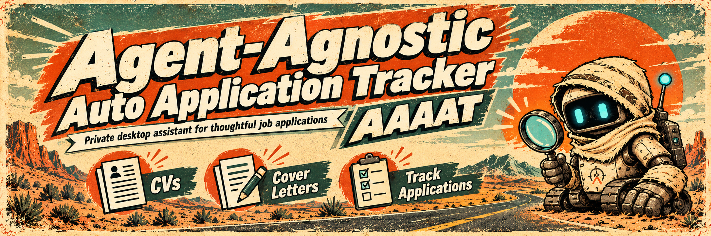
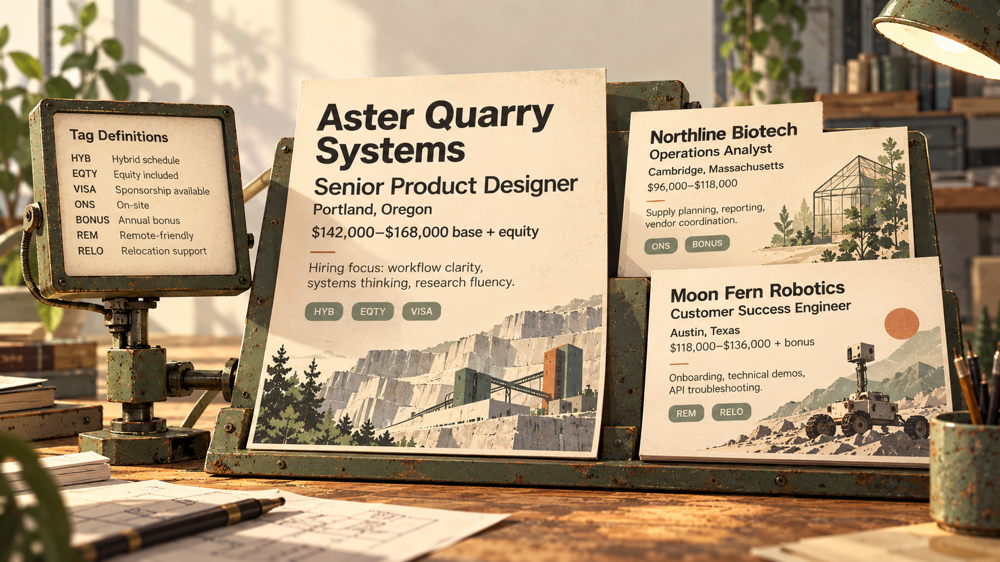
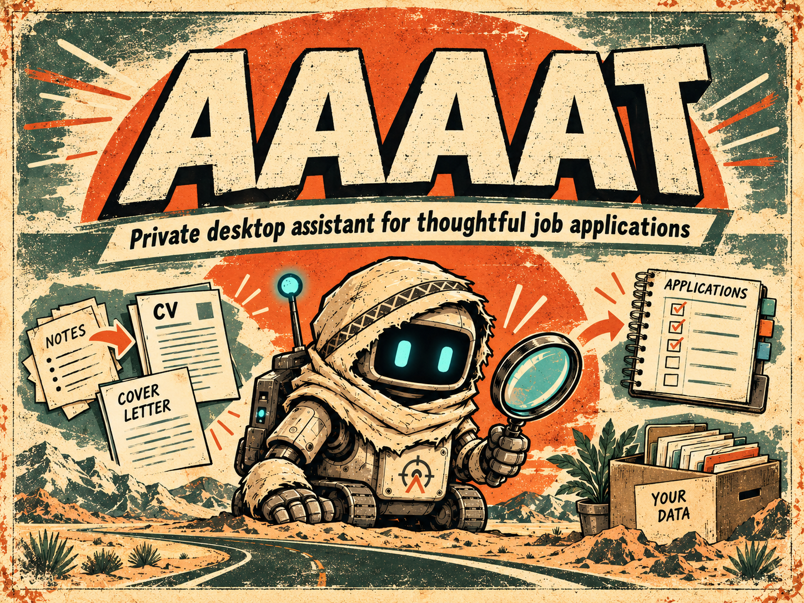
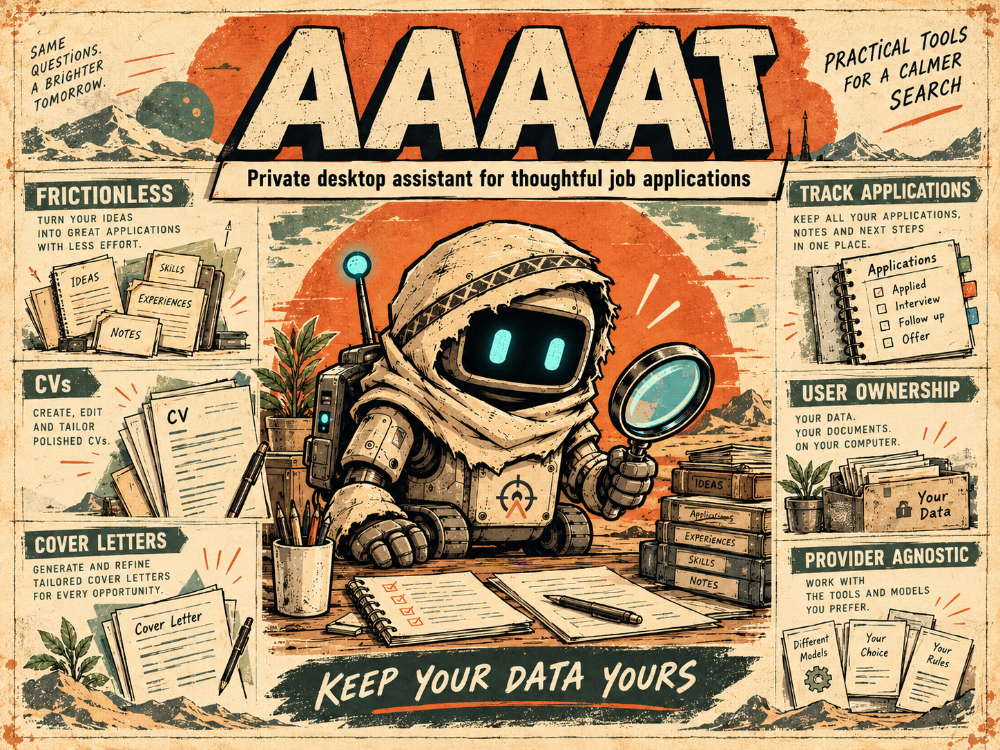

Never lose an interesting offer.
Save the job posting, recruiter message or quick note that caught your attention. Add the useful details now, or come back to them later.
How to save an offer →Your applications and documents, in one place.
A free desktop app to remember job opportunities, find the details later, and create CVs and cover letters from your own information. Easy to use yourself, with AI help whenever you want it.
Free & open source · Windows, macOS & Linux
Save the job posting, recruiter message or quick note that caught your attention. Add the useful details now, or come back to them later.
How to save an offer →Remember the company, role, terms and notes without searching through old emails. Find an opportunity as soon as someone mentions it.
See how you find it →Reuse your experience, make the changes you want, and produce a CV or cover letter you can send. You can create documents even without a saved offer.
Make your first CV →The real AAAAT desktop
“Hi, I’m calling about the position at…” Search the name and see exactly which job they mean, what it offered and what you noted about it.


Keep the context
Some roles are interesting because of the salary. Others because of flexible hours, a particular team or work you want to do. Keep the details that matter to you.
Choose what stands out when you browse saved opportunities. Add notes and Tags when they help you recognize or compare them.
Make application covers your own →

From notes to documents
Keep your experience, skills and education together. Use them to create a new CV, update an older one or write a cover letter that suits a particular role.
Edit every document yourself and generate a PDF when it is ready to send.
Learn to make a CV →Work the way you want.
You can do real work immediately: saving offers, writing CVs and finding information. PDF generation and local AI are available through guided setup when you want them.
Your job opportunities, career information and documents live in a local folder you choose. You can edit, back up and reuse what you keep.
Your information and backups →Install optional local AI, connect a compatible model, or simply copy a request into any text-capable LLM. No paid service is required to use AAAAT.
See AI options →Inspect the project, use it without an account, and follow its development. It is built by one person with substantial AI assistance.
Meet the project →More than a place to save offers
AAAAT is simple when you just need to save a posting, and genuinely flexible when your career or documents demand more. The controls are yours, not locked behind a subscription or a preferred AI provider.
Choose which job details appear on covers, add your own fields, keep original messages, use shared Tags and recover notes when the recruiter calls.
See application customization →Keep experience and achievements together, save alternate wording, and tailor several CVs without repeatedly rewriting your career history.
Explore reusable information →Edit CV and letter content and section order, save reusable templates, choose PDF presentation and retain portable document projects.
Learn document composition →Switch between your connections, edit instructions for different AI actions, inspect and control the context sent, or use any text-capable LLM by copy and paste.
Explore every AI journey →Read the complete AAAAT guide, from first use to detailed configuration →
From the AAAAT workshop
AAAAT’s patched explorer robot represents a simple idea: find what matters in the noise, keep it close, and turn it into something useful. These are the project’s original illustrations.


Practical tools for a calmer search
Try the included demo, or create a workspace to keep your own offers and documents. You choose the setup and the AI you want to use.